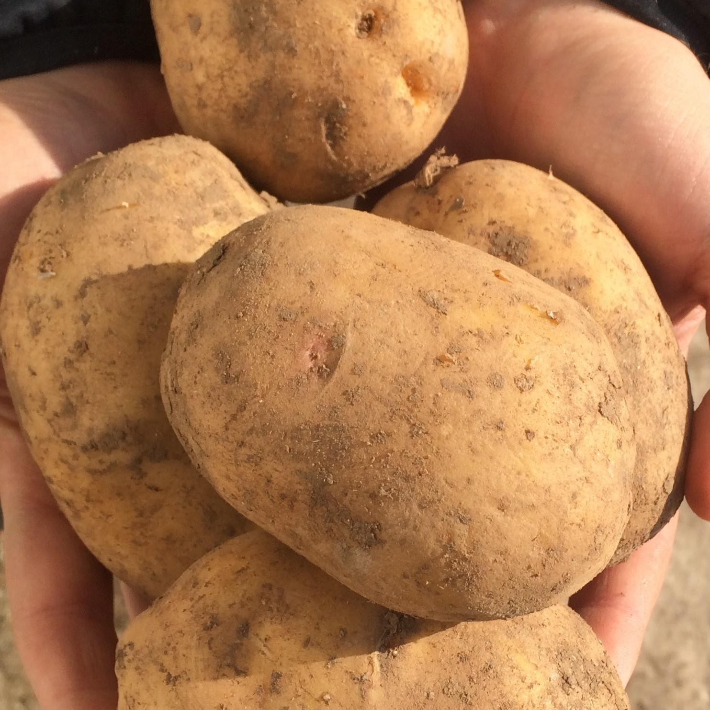
01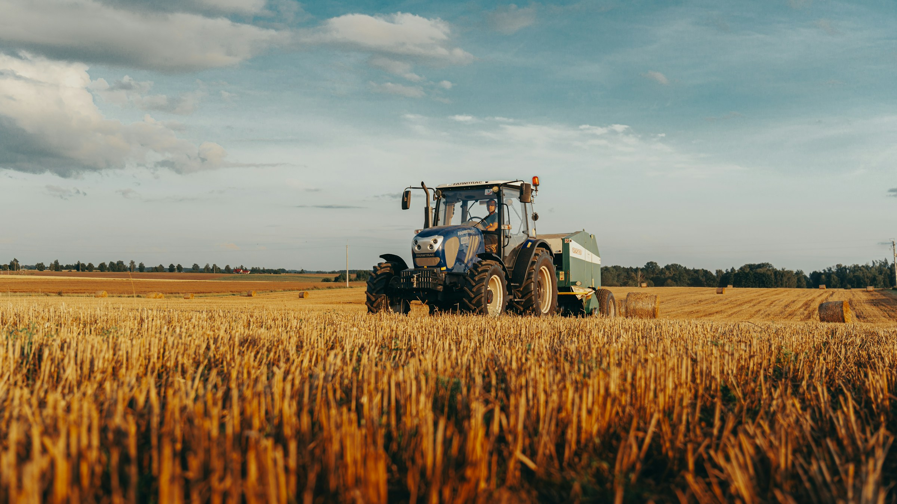
Veľký Biel Slovensko
Pestujeme
s rešpektom
k pôde.
Slovenský pestovateľ zeleniny a poľnohospodárskych plodín s tradíciou od roku 1992.
Est.
1992
Ilustračná fotografia · Michał Bielejewski / Unsplash
01 Szalay Farm
Poctivé pestovanie
má svoje
korene.
Začínali sme v roku 1992 s pšenicou a kukuricou. O tri roky neskôr pribudli zemiaky a postupne aj ďalšie plodiny, ktoré dnes tvoria našu produkciu.
Veľký Biel nám dáva kvalitnú pôdu a vďaka blízkosti Malého Dunaja aj dostatok vody. Tu je naša farma, stredisko aj baliareň.
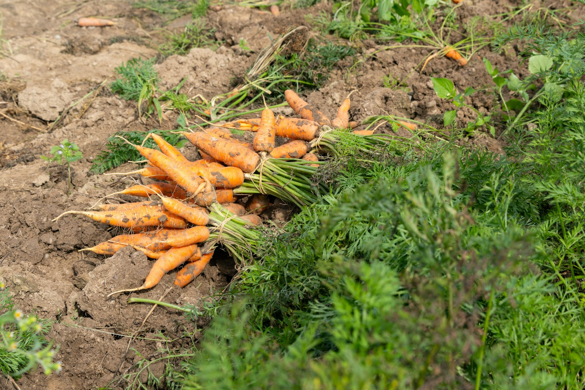
1992
začiatok našej cesty
Veľký Biel
domov našej farmy
Slovensko
lokálna produkcia
02 Pestujeme
Z našich
polí
Zelenina aj klasické poľnohospodárske plodiny. Produkcia, ktorú poznáme od osiva až po balenie.
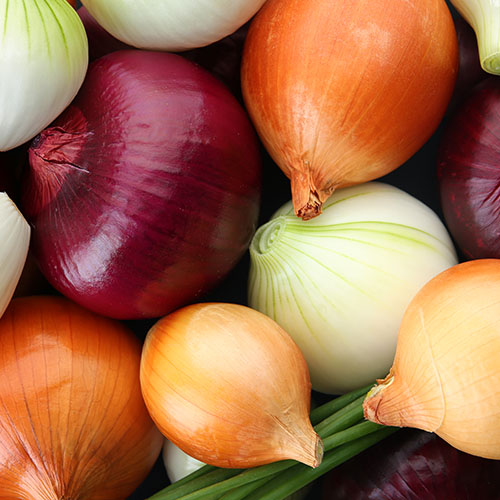
02Cibuľa
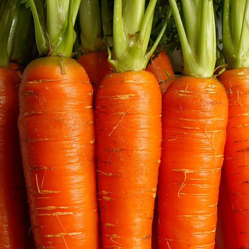
03Mrkva
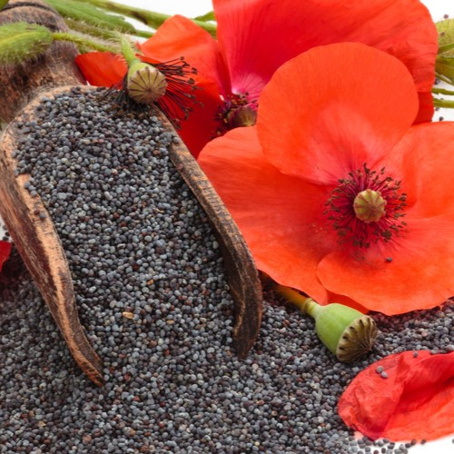
04Mak
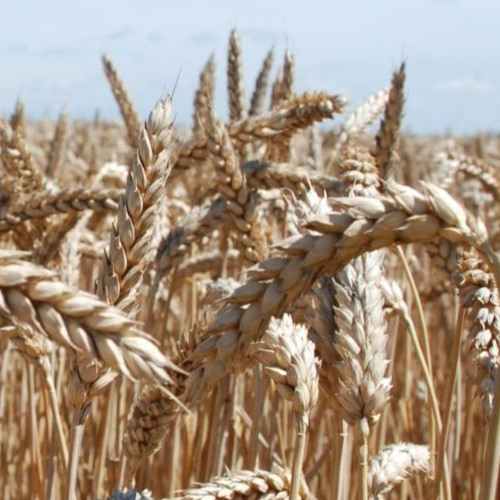
05Pšenica
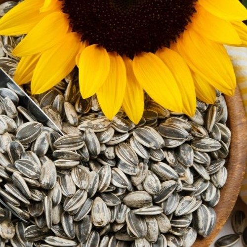
06Slnečnica
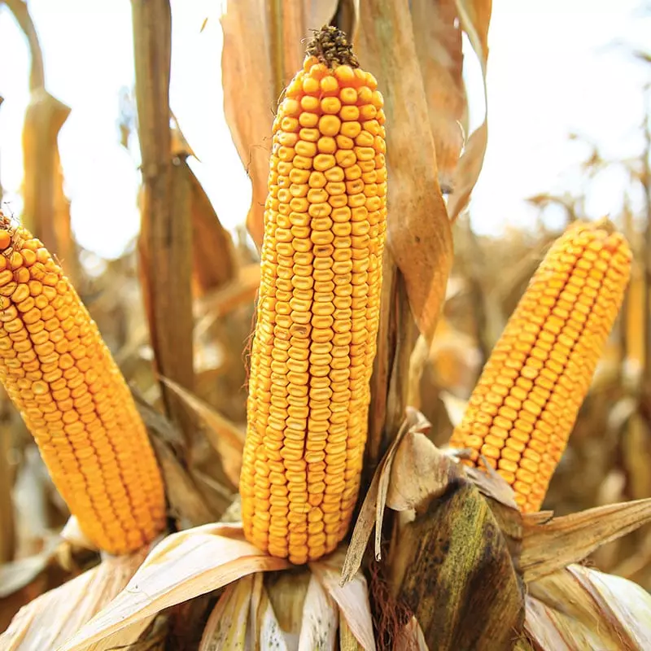
07Kukurica
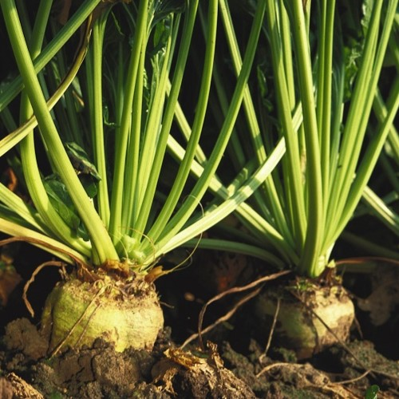
08Cukrová repa
03 Naša práca
Od poľa
k zákazníkovi.
Pestovaním to u nás nekončí. Vlastnú produkciu zberáme, triedime, balíme a pripravujeme na cestu k zákazníkom.
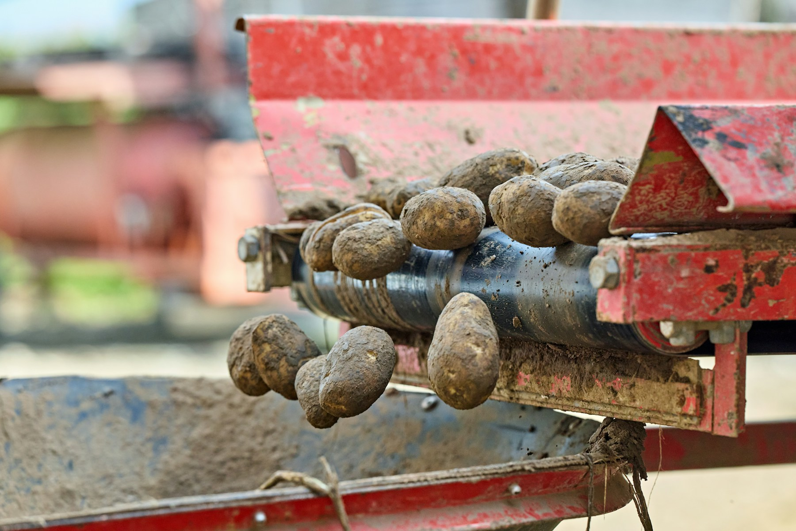
-
01
Pestujeme
Na poliach v okolí Veľkého Bielu dávame plodinám čas a podmienky, ktoré potrebujú.
-
02
Zberáme
Úrodu zbierame s vlastnou technikou v čase, keď je pripravená ísť ďalej.
-
03
Balíme
V našom stredisku produkciu triedime a balíme pre predaj aj ďalšiu distribúciu.
-
04
Distribuujeme
Z Veľkého Bielu dodávame produkty do obchodných sietí na Slovensku aj v zahraničí.
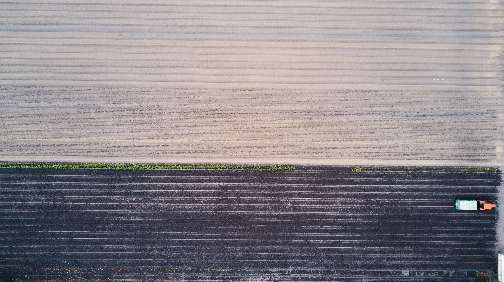
04 Tradícia
Viac ako tri desaťročia
na jednej pôde.
Z malej farmy s pšenicou a kukuricou vyrástlo stredisko, ktoré pestuje zeleninu, balí vlastnú produkciu a denne ju posiela ďalej. Miesto zostáva rovnaké: Veľký Biel.
Prečítať náš príbeh05 Podniková predajňa
Zastavte sa
priamo u nás.
Kostolná 734
900 24 Veľký Biel +421 917 844 606
Otváracie hodiny
- Pondelok
- 7:00 – 16:00
- Utorok
- 7:00 – 16:00
- Streda
- 7:00 – 16:00
- Štvrtok
- 7:00 – 16:00
- Piatok
- 7:00 – 16:00
- Sobota
- 8:00 – 12:00
- Nedeľa
- Zatvorené
Obedná prestávka počas týždňa: 12:30 – 13:00
V predajni nájdete
Otvoriť navigáciu
Zemiaky, cibuľu, mak, pšenicu, slnečnicu, kukuricu a strukoviny.
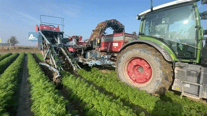
06 Práca na farme
Práca, za ktorou
je výsledok
vidieť.
Hľadáme ľudí, ktorí vedia prevziať zodpovednosť za svoju prácu a chcú byť súčasťou každodenného chodu farmy.
Pozrieť podmienky pozícií
Farma · predajňa · baliareň
900 24 Veľký Biel
Slovensko
Veľký Biel · Slovensko
Szalay Farm
Kostolná 734900 24 Veľký Biel
Slovensko
Szalay Farm s.r.o.
Kostolná 734900 24 Veľký Biel
Slovensko
IČO: 51870550
DIČ: 2121146588
IČ DPH: SK2121146588
08 Napíšte nám
Máte otázku
k produkcii alebo
odberu?
Uveďte na seba kontakt a stručne opíšte, čo potrebujete. Správu pripravíme na odoslanie priamo vo vašej e-mailovej aplikácii.